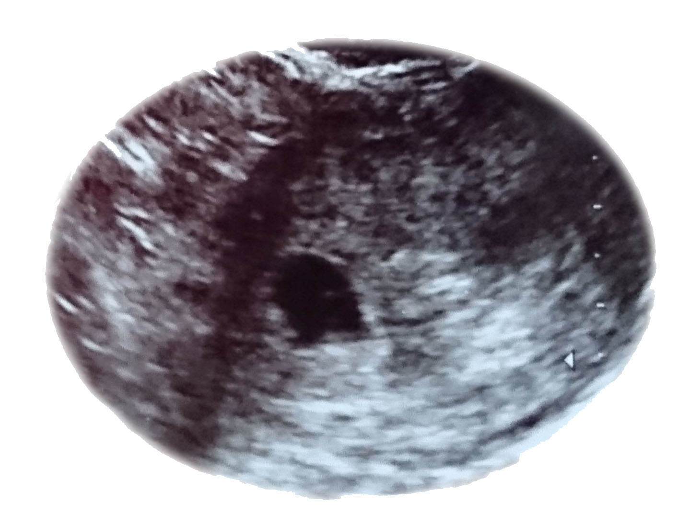

何のサイト？
世の中には妊娠・出産・育児について（当たり前ですが）女性向けに作られた雑誌・Webサイトは数多くありますが、男性目線での情報はあまり浸透していません。
このサイトではこれから父親になる人、あるいは父親になる予定の人に向けて、妻の妊娠周期に合わせて何をすればよいか・どういうことに気を付けるべきかポイントを紹介しています。
これから父親になる人へ

自分が妊娠するわけではないので体調や日常生活に変化が無く、父親になるという実感はあまり感じ取れないと思います。
ところが妻のお腹が徐々に大きくなるにつれ、子供が産まれるまでに父親になる者としてやらなければならないことが実はたくさんあります。
妻への気遣い…お金の手続き…ベビーグッズの準備…
大概の新米パパは何していいか分からないと思います。
妻に「何もしない旦那さん」と残念な印象を持たれる前に、いつ・何をすべきか事前に情報を入れておいて頼れる旦那さんにレベルアップしておきましょう。
2ヶ月目
妊娠4~7週目。
たまに昼ドラとかの演出で「急に吐き気に襲われる」⇒「トイレでおう吐」⇒「まさか…!!」の展開が繰り広げられたら、それは妊娠2ヶ月目なんだなと思っていい。
この頃の赤ちゃんの様子

| 身長 |
体重 |
補足 |
| 1~2cm |
1~4g（ぶどう1粒） |
えらや尻尾がある
既に心臓が動いている |
旦那さんに必要な対応は？
嫁さんからの報告を受けて初めて妊娠したことが判明すると思いますが、まずは盛大に喜びお祝いしてあげましょう。
喫煙者ならばまずはこれを機会にタバコをきっぱりと止めちゃいましょう。
実は喫煙者が吸う主流煙より周囲の人が吸う副流煙の方が有毒物質が多いらしいです。
まさに百害あって一利なし(´･ω･｀)
ちなみに禁酒もできるならなお良し。
この時期、嫁さんに悪阻（つわり）の症状が現れはじめます。
吐き気や発熱、腹痛などの症状が出ますが市販薬は胎児に悪影響を与えるのでお医者さんが処方してくれる薬以外は服用させないように気を付けましょう。
他にも眠くなったり味覚が変わったりやる気が起きなかったりと様々な症状が出る場合もあります。
旦那さんは臨機応変にサポートしてあげましょう。
妊娠中は食べられるものが少し限られてきます。
アルコール（お酒）はもちろんNGですが、カフェインを含むコーヒーや烏龍茶、食中毒の心配がある生の魚介類は極力控えるようにしましょう。
「気分転換に回転寿司でも行こうか。」とか言わないように気を付けてください。
まとめ
-
禁煙・禁酒する（少なくとも嫁さんの前では…）
-
どんなに体調悪くとも市販薬は服用させない
-
食べてよいもの・悪いものを把握する